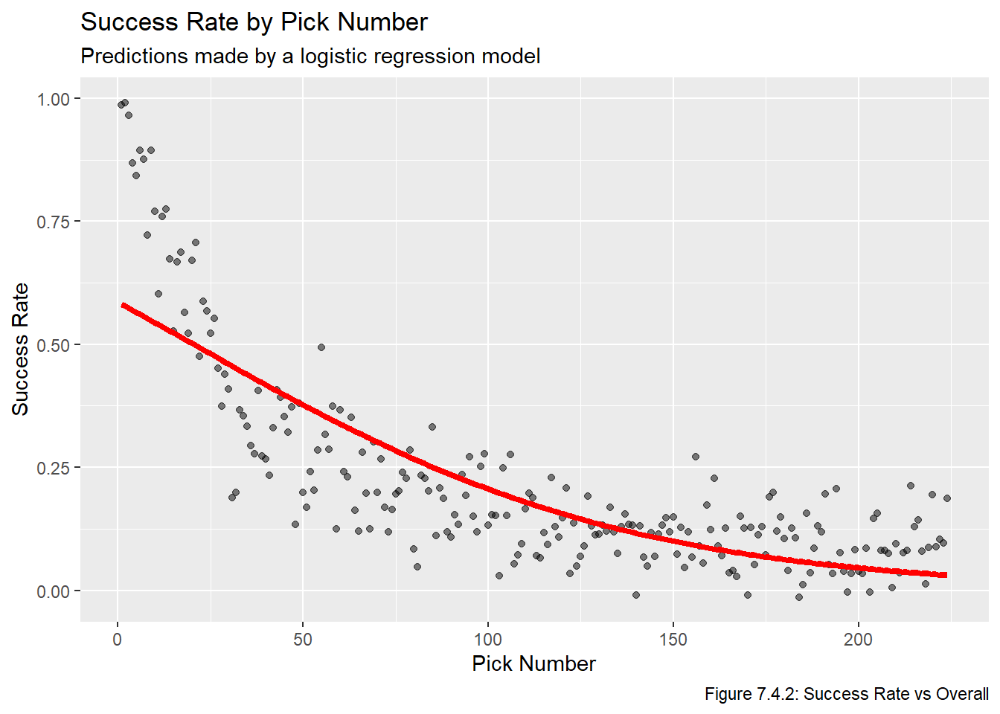

Code
# renv::install("patchwork")
# renv::install("stringr")
# renv::install("reactable")
library(patchwork)
library(stringr)
library(reactable)
source("functions.R") # load functions defined in prior chaptersWe install and load the necessary packages, along with functions from prior chapters.
# renv::install("patchwork")
# renv::install("stringr")
# renv::install("reactable")
library(patchwork)
library(stringr)
library(reactable)
source("functions.R") # load functions defined in prior chaptersNow that we have metrics representing different ways of calculating the historical value of a draft pick, we can now develop models for predicting the value of future picks. First, we will fit a linear regression model to the data, an then we will develop a model via non-linear regression. We will then put the models on the same scale by multiplying each predicted value by a constant, allowing us to compare models more effectively. As always, when fitting a model it is important to ensure that the underlying assumptions of a model hold, otherwise the model can be useless, or even worse, misleading. Note that the following two Stack Overflow posts were once again very helpful when writing the code in this chapter:
Recall the four plots we ended the Transform chapter with, based on the mean PS, mean GP, success rate, and mean adjusted PS for every selection between 1 and 224. For convenience we replot this data below:
(plot_mean_ps + plot_mean_gp) / (plot_suc_rate + plot_mean_adj_ps)
We use lm to fit a linear model to each of the metrics:
metrics <- c("mean_ps", "mean_gp", "suc_rate", "mean_adj_ps")
overall <- all_data_comb$overall
lin_models <- lapply(metrics, \(x) lm(all_data_comb[[x]] ~ overall))For each linear model, we generate a vector of predicted values and plot it on top of the historical values:
lm_pred_vals <- lapply(seq(1,4),
\(x) predict(lin_models[[x]],
data.frame(overall = seq(1,224))))
lm_pred_vals <- data.frame(overall = seq(1, 224),
mean_ps = lm_pred_vals[[1]],
mean_gp = lm_pred_vals[[2]],
suc_rate = lm_pred_vals[[3]],
mean_adj_ps = lm_pred_vals[[4]])
names <- c("Mean PS", "Mean GP", "Success Rate", "Mean Adjusted PS")
for(i in 1:length(metrics)){
assign(str_glue("plot_lm_{metrics[i]}"),
get(str_glue("plot_{metrics[i]}")) +
geom_line(data = lm_pred_vals, aes_string(x = "overall", y = metrics[i]),
col = "red", lwd = 1.5))
}
(plot_lm_mean_ps + plot_lm_mean_gp) / (plot_lm_suc_rate + plot_lm_mean_adj_ps)
All four of these linear models are very clearly inadequate, but for sake of completeness we will look at plots of the residuals vs fitted values.
lm_resids <- lapply(lin_models, residuals)
lm_resids <- data.frame(mean_ps_resid = lm_resids[[1]],
mean_gp_resid = lm_resids[[2]],
suc_rate_resid = lm_resids[[3]],
mean_adj_ps_resid = lm_resids[[4]])
lm_pred_vals_resid <- cbind(lm_pred_vals, lm_resids)
for(i in 1:length(metrics)){
assign(str_glue("plot_res_{metrics[i]}"),
ggplot(lm_pred_vals_resid, aes_string(x = str_glue("{metrics[i]}"),
y = str_glue("{metrics[i]}_resid"))) +
geom_hline(yintercept = 0, col = "red", lwd = 1.5) + geom_point())
}
(plot_res_mean_ps + plot_res_mean_gp) / (plot_res_suc_rate + plot_res_mean_adj_ps)
Clearly none of these models are appropriate, they very clearly fail the assumptions regarding a correct functional form, constant variance of residuals, and independent residual assumptions. It is also clear that the errors are not normally distributed.
Given that none of the four linear models were appropriate, we will reattempt to fit a model using non-linear regression (ie the nls function, which stands for non-linear least squares). The resource Non-linear Regression in R was very helpful when working on this section. In short, we will be fitting the model
\[ v_{i,m} = \frac{\phi_{1, m}}{1+e^{(\phi_{2,m}- i)/\phi_{3,m}}} \]
Where
\(i\) is the pick number.
\(m\) is the metric being used.
\(v_{i,m}\) is the value of pick \(i\) based on metric \(m\).
\(\phi_{1, m},\phi_{2, m},\phi_{3, m}\) are parameters that depend on which metric we are using.
We choose to use nls because it allows us to directly fit a model with non-linear parameters, we do not need to transform the explanatory or response variates. We fit these models as follows:
for(i in seq(1,4)){
assign(str_glue("nls_{metrics[i]}"),
nls(all_data_comb[[i+1]] ~ SSlogis(log(overall), phi1, phi2, phi3)))
}
nls_pred_vals <- data.frame(pick = seq(1, 224),
mean_ps = predict(nls_mean_ps, pick),
mean_gp = predict(nls_mean_gp, pick),
suc_rate = predict(nls_suc_rate, pick),
mean_adj_ps = predict(nls_mean_adj_ps, pick))
for(i in 1:length(metrics)){
assign(str_glue("plot_nls_{metrics[i]}"),
get(str_glue("plot_{metrics[i]}")) +
geom_line(data = nls_pred_vals, aes_string(x = "overall", y = metrics[i]),
col = "red", lwd = 1.5))
}
(plot_nls_mean_ps + plot_nls_mean_gp) / (plot_nls_suc_rate + plot_nls_mean_adj_ps)
These curves all seem to fit well. We will look into the model’s underlying assumptions in the model selection section.
One notable issue with our non-linear model is that most of the models are on very different scales (Mean PS and Mean Adjusted PS are both between roughly 1-100, Mean GP is between roughly 0-1200, and Success Rate is between 0-1). We would like to standardize this to allow for a more direct comparison of models, such as comparing the residual sum of squares. To do this, we will calculate \(C_m = \frac{1000}{v_{1,m}}\), and then multiply the value of every pick by \(C_m\) to get a value out of 1000 where \(v_{1, m} = 1000\) for all metrics. Another point in favour of rescaling is to maintain consistence with existing work such as the research listed in the Question Chapter, which typically make the 1st overall pick worth 1000 “points” and then calculate the relative value of other picks based on that.
nls_pred_vals pick mean_ps mean_gp suc_rate mean_adj_ps
1 1 95.790143 892.91050 1.04073107 110.689279
2 2 72.762382 815.44292 1.00063213 84.938154
3 3 59.689045 751.43570 0.96153116 69.959180
4 4 51.053132 697.34683 0.92413006 59.941891
5 5 44.848707 650.90740 0.88864971 52.692570
6 6 40.141446 610.53523 0.85512832 47.166999
7 7 36.429660 575.07533 0.82352148 42.796431
8 8 33.417171 543.65798 0.79374557 39.241708
9 9 30.916725 515.61270 0.76569939 36.286806
10 10 28.803600 490.41273 0.73927552 33.787026
11 11 26.991236 467.63761 0.71436658 31.641500
12 12 25.417523 446.94722 0.69086859 29.777593
13 13 24.036642 428.06310 0.66868280 28.141572
14 14 22.814002 410.75496 0.64771655 26.692776
15 15 21.722958 394.83049 0.62788354 25.399823
16 16 20.742633 380.12784 0.60910379 24.238087
17 17 19.856417 366.50969 0.59130343 23.187949
18 18 19.050923 353.85877 0.57441441 22.233577
19 19 18.315231 342.07428 0.55837403 21.362047
20 20 17.640338 331.06910 0.54312464 20.562693
21 21 17.018752 320.76748 0.52861319 19.826636
22 22 16.444185 311.10327 0.51479088 19.146416
23 23 15.911317 302.01844 0.50161280 18.515720
24 24 15.415614 293.46184 0.48903757 17.929167
25 25 14.953188 285.38820 0.47702706 17.382140
26 26 14.520685 277.75733 0.46554611 16.870653
27 27 14.115193 270.53341 0.45456225 16.391248
28 28 13.734174 263.68440 0.44404546 15.940907
29 29 13.375403 257.18156 0.43396801 15.516986
30 30 13.036921 250.99905 0.42430419 15.117157
31 31 12.716996 245.11352 0.41503018 14.739361
32 32 12.414091 239.50390 0.40612388 14.381772
33 33 12.126839 234.15102 0.39756478 14.042761
34 34 11.854016 229.03751 0.38933378 13.720874
35 35 11.594524 224.14750 0.38141313 13.414808
36 36 11.347378 219.46653 0.37378629 13.123389
37 37 11.111686 214.98136 0.36643783 12.845558
38 38 10.886645 210.67983 0.35935335 12.580359
39 39 10.671524 206.55080 0.35251939 12.326924
40 40 10.465659 202.58400 0.34592337 12.084463
41 41 10.268445 198.76998 0.33955352 11.852258
42 42 10.079331 195.10001 0.33339880 11.629653
43 43 9.897810 191.56599 0.32744886 11.416045
44 44 9.723419 188.16045 0.32169398 11.210885
45 45 9.555731 184.87646 0.31612506 11.013665
46 46 9.394356 181.70756 0.31073350 10.823921
47 47 9.238930 178.64775 0.30551124 10.641222
48 48 9.089120 175.69146 0.30045068 10.465171
49 49 8.944617 172.83347 0.29554466 10.295402
50 50 8.805134 170.06893 0.29078641 10.131573
51 51 8.670406 167.39328 0.28616956 9.973370
52 52 8.540185 164.80227 0.28168810 9.820499
53 53 8.414241 162.29191 0.27733633 9.672687
54 54 8.292360 159.85848 0.27310885 9.529679
55 55 8.174342 157.49845 0.26900059 9.391238
56 56 8.060000 155.20853 0.26500670 9.257142
57 57 7.949159 152.98561 0.26112261 9.127184
58 58 7.841655 150.82678 0.25734399 9.001169
59 59 7.737335 148.72928 0.25366671 8.878916
60 60 7.636055 146.69052 0.25008686 8.760253
61 61 7.537680 144.70803 0.24660073 8.645020
62 62 7.442081 142.77951 0.24320479 8.533065
63 63 7.349140 140.90277 0.23989566 8.424248
64 64 7.258743 139.07572 0.23667017 8.318433
65 65 7.170784 137.29642 0.23352525 8.215495
66 66 7.085161 135.56299 0.23045800 8.115315
67 67 7.001781 133.87367 0.22746566 8.017779
68 68 6.920554 132.22679 0.22454559 7.922782
69 69 6.841393 130.62075 0.22169526 7.830222
70 70 6.764219 129.05405 0.21891228 7.740004
71 71 6.688955 127.52524 0.21619434 7.652039
72 72 6.615530 126.03296 0.21353925 7.566239
73 73 6.543873 124.57590 0.21094490 7.482524
74 74 6.473920 123.15282 0.20840930 7.400817
75 75 6.405610 121.76253 0.20593050 7.321043
76 76 6.338881 120.40392 0.20350668 7.243133
77 77 6.273680 119.07589 0.20113607 7.167021
78 78 6.209951 117.77743 0.19881698 7.092643
79 79 6.147644 116.50754 0.19654778 7.019939
80 80 6.086711 115.26530 0.19432693 6.948851
81 81 6.027104 114.04979 0.19215292 6.879325
82 82 5.968781 112.86015 0.19002434 6.811308
83 83 5.911697 111.69558 0.18793981 6.744749
84 84 5.855813 110.55526 0.18589799 6.679602
85 85 5.801091 109.43846 0.18389764 6.615820
86 86 5.747492 108.34444 0.18193751 6.553360
87 87 5.694982 107.27251 0.18001645 6.492180
88 88 5.643527 106.22201 0.17813332 6.432240
89 89 5.593094 105.19228 0.17628704 6.373501
90 90 5.543653 104.18272 0.17447655 6.315926
91 91 5.495172 103.19274 0.17270086 6.259481
92 92 5.447624 102.22177 0.17095899 6.204130
93 93 5.400980 101.26926 0.16925000 6.149843
94 94 5.355216 100.33468 0.16757300 6.096588
95 95 5.310304 99.41754 0.16592712 6.044333
96 96 5.266221 98.51734 0.16431151 5.993052
97 97 5.222943 97.63361 0.16272537 5.942716
98 98 5.180448 96.76591 0.16116792 5.893298
99 99 5.138713 95.91380 0.15963840 5.844773
100 100 5.097719 95.07686 0.15813609 5.797116
101 101 5.057444 94.25468 0.15666028 5.750304
102 102 5.017870 93.44689 0.15521029 5.704313
103 103 4.978977 92.65309 0.15378546 5.659121
104 104 4.940748 91.87292 0.15238517 5.614707
105 105 4.903165 91.10604 0.15100879 5.571051
106 106 4.866211 90.35211 0.14965573 5.528133
107 107 4.829871 89.61080 0.14832542 5.485933
108 108 4.794128 88.88179 0.14701730 5.444434
109 109 4.758967 88.16477 0.14573083 5.403617
110 110 4.724375 87.45946 0.14446549 5.363465
111 111 4.690336 86.76556 0.14322077 5.323962
112 112 4.656837 86.08280 0.14199619 5.285092
113 113 4.623865 85.41091 0.14079128 5.246839
114 114 4.591408 84.74963 0.13960556 5.209188
115 115 4.559452 84.09871 0.13843860 5.172124
116 116 4.527986 83.45791 0.13728997 5.135634
117 117 4.496999 82.82698 0.13615924 5.099704
118 118 4.466478 82.20571 0.13504601 5.064321
119 119 4.436415 81.59387 0.13394988 5.029471
120 120 4.406796 80.99125 0.13287047 4.995144
121 121 4.377614 80.39764 0.13180741 4.961326
122 122 4.348858 79.81283 0.13076034 4.928006
123 123 4.320517 79.23663 0.12972891 4.895173
124 124 4.292584 78.66886 0.12871278 4.862816
125 125 4.265049 78.10932 0.12771161 4.830924
126 126 4.237903 77.55784 0.12672509 4.799487
127 127 4.211137 77.01424 0.12575290 4.768496
128 128 4.184745 76.47835 0.12479474 4.737940
129 129 4.158717 75.95001 0.12385032 4.707810
130 130 4.133046 75.42907 0.12291934 4.678097
131 131 4.107724 74.91536 0.12200153 4.648792
132 132 4.082744 74.40873 0.12109661 4.619886
133 133 4.058099 73.90905 0.12020433 4.591372
134 134 4.033782 73.41615 0.11932442 4.563241
135 135 4.009786 72.92992 0.11845664 4.535485
136 136 3.986105 72.45021 0.11760074 4.508097
137 137 3.962732 71.97688 0.11675648 4.481069
138 138 3.939661 71.50983 0.11592363 4.454393
139 139 3.916887 71.04891 0.11510197 4.428063
140 140 3.894403 70.59400 0.11429127 4.402072
141 141 3.872203 70.14500 0.11349133 4.376413
142 142 3.850283 69.70178 0.11270194 4.351080
143 143 3.828636 69.26424 0.11192288 4.326066
144 144 3.807258 68.83226 0.11115398 4.301365
145 145 3.786143 68.40574 0.11039502 4.276971
146 146 3.765286 67.98457 0.10964583 4.252879
147 147 3.744683 67.56866 0.10890622 4.229082
148 148 3.724328 67.15790 0.10817601 4.205575
149 149 3.704217 66.75220 0.10745502 4.182353
150 150 3.684346 66.35147 0.10674309 4.159409
151 151 3.664710 65.95561 0.10604006 4.136740
152 152 3.645305 65.56454 0.10534575 4.114340
153 153 3.626127 65.17816 0.10466001 4.092205
154 154 3.607171 64.79640 0.10398269 4.070328
155 155 3.588434 64.41918 0.10331363 4.048707
156 156 3.569911 64.04640 0.10265268 4.027335
157 157 3.551599 63.67799 0.10199972 4.006210
158 158 3.533495 63.31388 0.10135458 3.985325
159 159 3.515594 62.95399 0.10071714 3.964678
160 160 3.497894 62.59825 0.10008726 3.944264
161 161 3.480390 62.24658 0.09946481 3.924079
162 162 3.463079 61.89891 0.09884966 3.904119
163 163 3.445958 61.55518 0.09824169 3.884380
164 164 3.429024 61.21532 0.09764077 3.864858
165 165 3.412274 60.87927 0.09704679 3.845551
166 166 3.395704 60.54695 0.09645962 3.826453
167 167 3.379312 60.21831 0.09587916 3.807562
168 168 3.363095 59.89329 0.09530529 3.788875
169 169 3.347049 59.57182 0.09473790 3.770387
170 170 3.331172 59.25385 0.09417689 3.752096
171 171 3.315462 58.93933 0.09362215 3.733998
172 172 3.299915 58.62818 0.09307357 3.716090
173 173 3.284528 58.32037 0.09253106 3.698370
174 174 3.269301 58.01584 0.09199452 3.680833
175 175 3.254229 57.71452 0.09146385 3.663478
176 176 3.239310 57.41639 0.09093897 3.646302
177 177 3.224543 57.12137 0.09041976 3.629300
178 178 3.209924 56.82943 0.08990616 3.612472
179 179 3.195451 56.54051 0.08939806 3.595813
180 180 3.181122 56.25457 0.08889539 3.579323
181 181 3.166935 55.97157 0.08839805 3.562996
182 182 3.152888 55.69145 0.08790597 3.546833
183 183 3.138979 55.41418 0.08741906 3.530829
184 184 3.125205 55.13970 0.08693725 3.514982
185 185 3.111564 54.86798 0.08646045 3.499290
186 186 3.098055 54.59898 0.08598859 3.483752
187 187 3.084675 54.33265 0.08552160 3.468363
188 188 3.071423 54.06896 0.08505939 3.453123
189 189 3.058296 53.80786 0.08460191 3.438029
190 190 3.045294 53.54932 0.08414907 3.423078
191 191 3.032413 53.29330 0.08370081 3.408270
192 192 3.019653 53.03976 0.08325706 3.393601
193 193 3.007011 52.78867 0.08281776 3.379069
194 194 2.994486 52.53999 0.08238284 3.364673
195 195 2.982077 52.29369 0.08195224 3.350411
196 196 2.969781 52.04973 0.08152589 3.336281
197 197 2.957597 51.80807 0.08110373 3.322281
198 198 2.945523 51.56870 0.08068570 3.308409
199 199 2.933558 51.33156 0.08027174 3.294663
200 200 2.921701 51.09664 0.07986180 3.281042
201 201 2.909949 50.86390 0.07945581 3.267543
202 202 2.898302 50.63331 0.07905373 3.254166
203 203 2.886757 50.40485 0.07865549 3.240907
204 204 2.875315 50.17847 0.07826105 3.227767
205 205 2.863972 49.95415 0.07787034 3.214743
206 206 2.852728 49.73187 0.07748332 3.201834
207 207 2.841582 49.51160 0.07709994 3.189037
208 208 2.830532 49.29331 0.07672015 3.176352
209 209 2.819577 49.07697 0.07634389 3.163777
210 210 2.808715 48.86255 0.07597112 3.151311
211 211 2.797946 48.65004 0.07560179 3.138952
212 212 2.787268 48.43940 0.07523586 3.126699
213 213 2.776680 48.23061 0.07487328 3.114549
214 214 2.766181 48.02365 0.07451400 3.102503
215 215 2.755770 47.81849 0.07415798 3.090559
216 216 2.745445 47.61511 0.07380518 3.078714
217 217 2.735205 47.41348 0.07345556 3.066969
218 218 2.725050 47.21359 0.07310906 3.055322
219 219 2.714979 47.01541 0.07276566 3.043770
220 220 2.704989 46.81891 0.07242531 3.032315
221 221 2.695081 46.62408 0.07208797 3.020953
222 222 2.685253 46.43090 0.07175361 3.009684
223 223 2.675504 46.23934 0.07142217 2.998507
224 224 2.665833 46.04939 0.07109364 2.987420C_m <- c(1, 1000 / nls_pred_vals[1,][-1])
nls_pred_vals <- C_m * nls_pred_vals
reactable(head(nls_pred_vals, 10)) # confirm it workedNow that we have the models on the same scale, we can plot the predicted values on top of each other.
ggplot(nls_pred_vals, aes(x = overall)) +
geom_line(aes(y = mean_ps), col = "purple", lwd = 0.85, lty = 1) +
geom_line(aes(y = mean_gp), col = "dodgerblue", lwd = 0.85, lty = 2) +
geom_line(aes(y = suc_rate), col = "salmon", lwd = 0.85, lty = 3) +
geom_line(aes(y = mean_adj_ps), col = "limegreen", lwd = 0.85, lty = 5
)
The mean PS and mean Adjusted PS lines are almost perfectly on top of each other, indicating the adjustment we made to estimate the PS remaining in players’ careers had a minimal impact on the estimate of pick value. Indeed:
mean(abs(nls_pred_vals$mean_ps - nls_pred_vals$mean_adj_ps))[1] 1.092829This tells us that the mean distance between pick value estimated by mean PS and mean Adjusted PS is about 1 point, which is effectively nothing since picks are valueed out of 1000 points.
Probably will take the model with the lowest RSS.
Create value and pick functions.